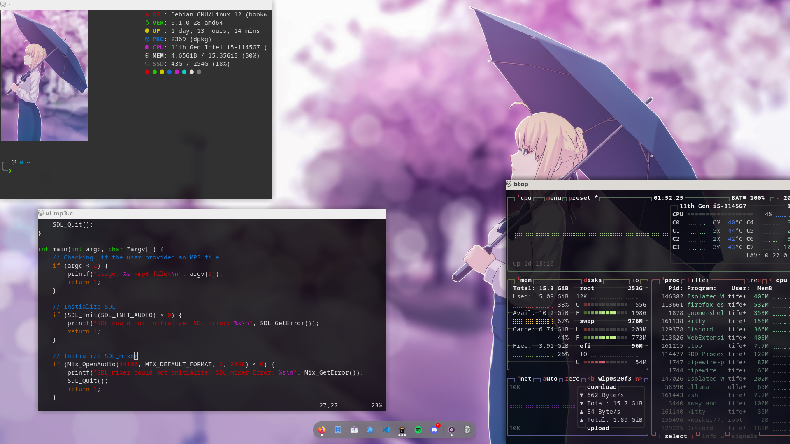
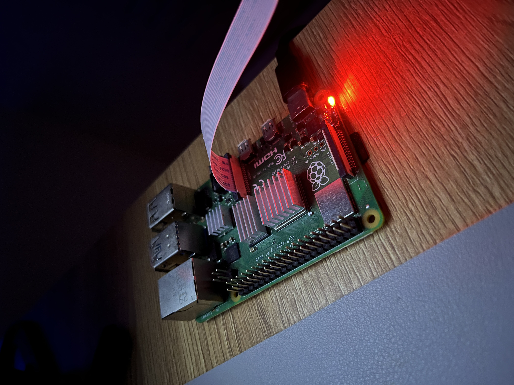
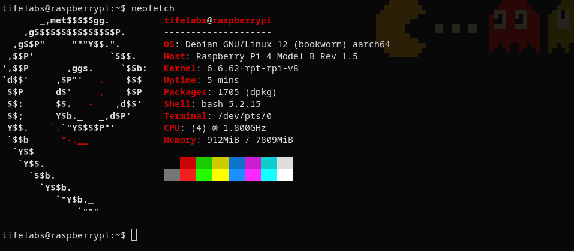
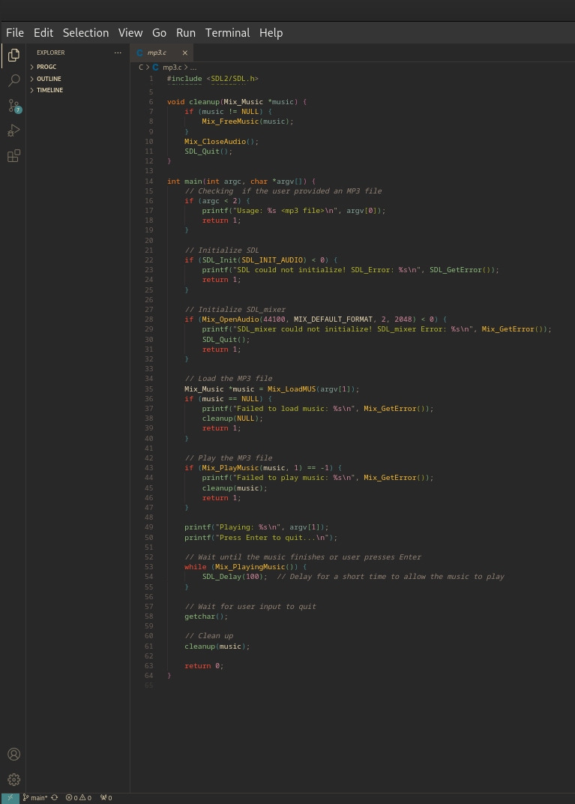
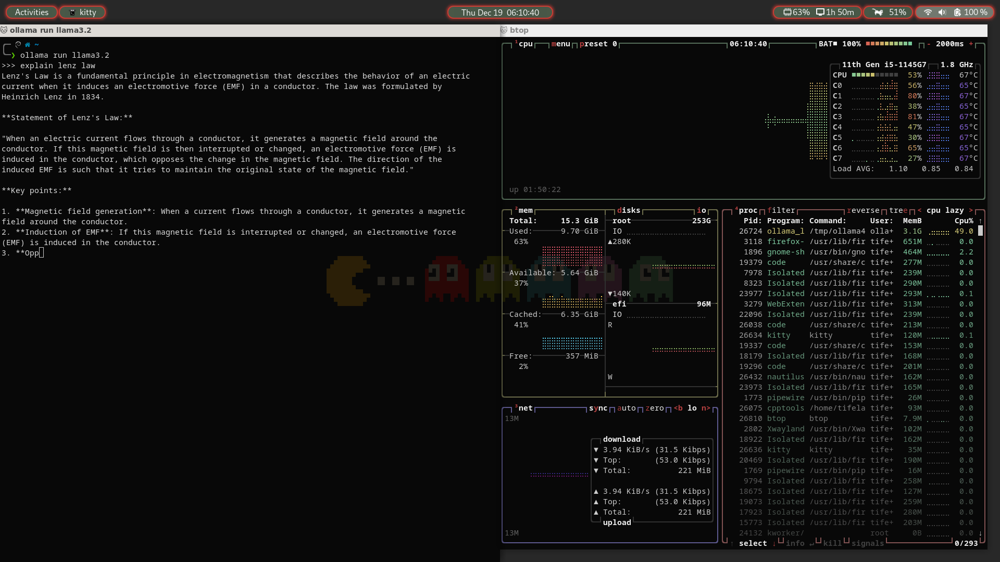

Welcome to a glimpse of my tech setup! I love experimenting with different tools and hardware to create an efficient and enjoyable workflow. Here’s what I currently use:
My primary device is a Dell Latitude 5520. It runs on Debian 12, a rock-solid Linux distribution that provides the perfect balance of performance and stability for my needs.
I also use a Raspberry Pi as a versatile companion for various tasks. Most of the time, I access it through SSH, which I find faster and more efficient than using a graphical interface like RealVNC.
SSH allows me to manage and interact with the Raspberry Pi seamlessly from my Dell Latitude. Here’s a quick glimpse of how my SSH sessions look:
For coding, I rely on Visual Studio Code, a versatile and highly customizable editor. With its extensive marketplace for extensions, I’ve tailored it to suit my workflow. Some of my favorite extensions include:
I use the Gruvbox theme, which is easy on my eyes and feels cozy while coding.
This setup allows me to balance flexibility, efficiency, and performance. Whether it’s coding, server management, or experimenting with new tools, I feel equipped to handle a variety of tasks seamlessly.
I also run LLaMA on my Dell Latitude. However, running LLaMA can be resource-intensive, and my laptop struggles a bit since it relies on the CPU and lacks a dedicated graphics card. You can see in the screenshot below that btop shows the CPU temperature rising during LLaMA processes:
I hope to upgrade my laptop in the future to handle such workloads more efficiently.
Thanks for reading!
~ Back to home